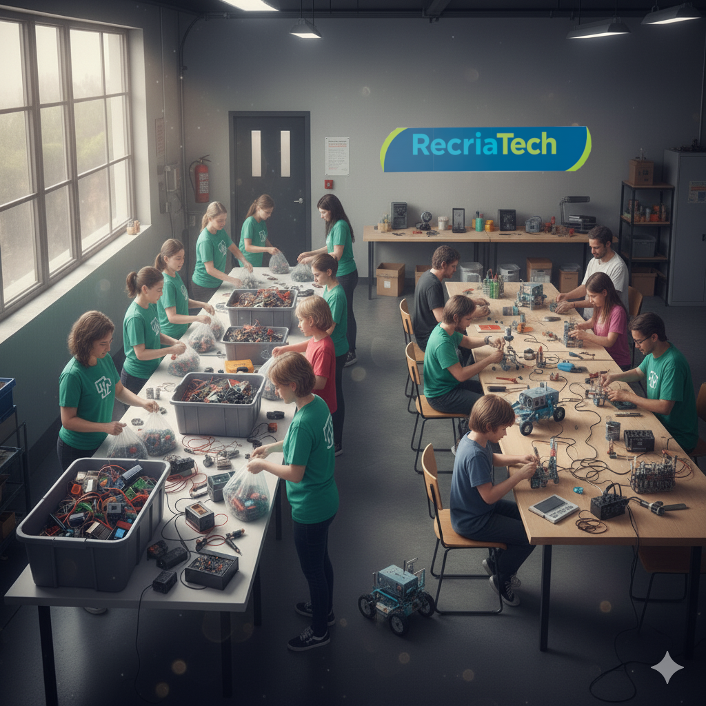
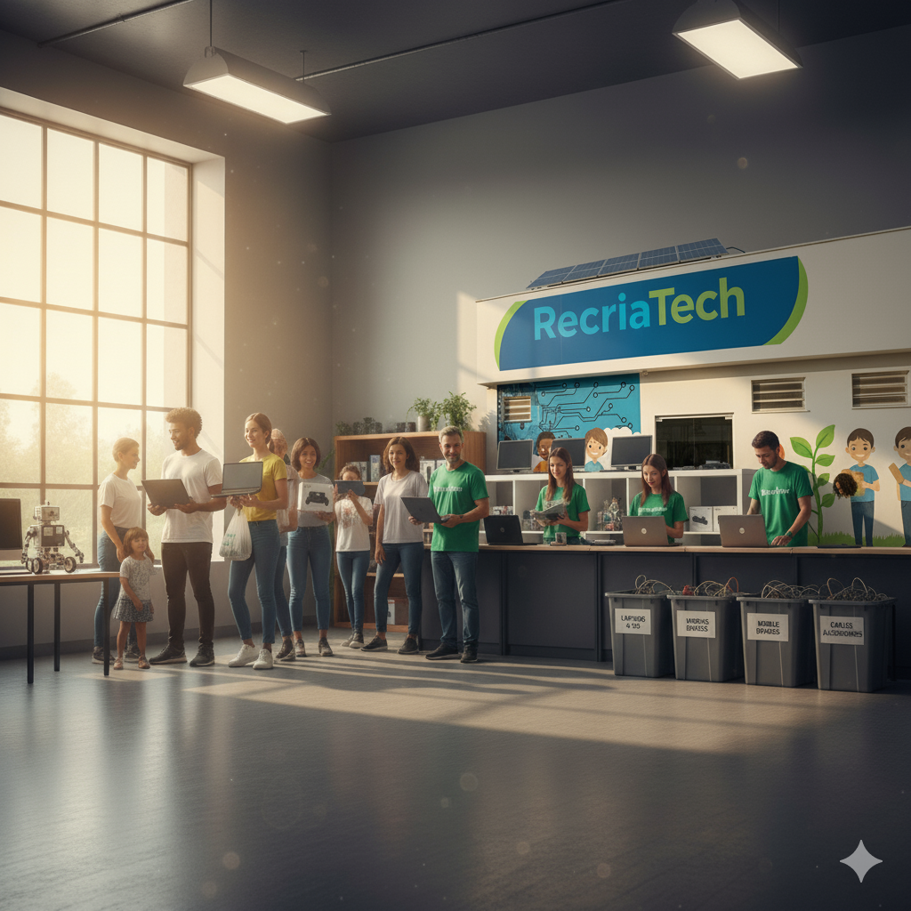

Voluntariado
Participe como voluntário e ajude a reaproveitar materiais eletrônicos para fins educativos. Contribua com oficinas, projetos escolares e ações que promovem aprendizado prático e consciência ambiental.
Como Doar
Você pode apoiar a RecriaTech doando equipamentos eletrônicos, peças, materiais ou seu tempo. Cada contribuição ajuda a transformar resíduos em oportunidades de ensino e sustentabilidade.
